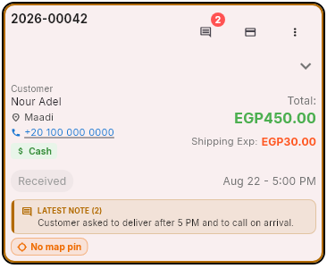

The order board
Every order lives here from the moment it is placed until it is delivered. You move it one column at a time, and the money is recorded when it goes out.
The columns
Two more columns exist but you never drag into them: Cancelled and Returned. An order gets there through the card menu, not by dragging.
Reading a card

| What you see | What it means |
|---|---|
| The order number | For an online order this is the WooCommerce number the customer knows. Use that number when you talk to them. |
| The area | The delivery area, printed on the card so you can group orders going the same way. |
| Pinned / No map pin | Whether the address has real map coordinates. "No map pin yet - add the location link before dispatch" means the courier will be guessing. Fix it before you send the order out. |
| The note strip | LATEST NOTE shows the last operational note on the order. Tap it to read all of them. If a colleague left a warning, it is here. |
| Stop 3 / 2/5 delivered | The courier's run: which stop this order is, and how far along the run is. Delivery missed means the courier tried and did not deliver. |
| Returned / Partially returned | Part or all of the order came back and was credited to the customer. |
| Custom shipping pending | Somebody asked for a different delivery charge and a manager has not answered yet. The order cannot go out until they do. |
Finding an order
- •Search takes an order number, a customer name or a phone number. Phone is the fastest when a customer calls.
- •The filter chips sit across the top and stay visible: date (Today, Last 7 days, ...), customer, status, amount, branch. The bar shows how many filters are on and Clear All removes them.
- •Filter by Branches matters if you cover more than one branch - an order you cannot find is usually filtered out, not missing.
The board updates itself
New orders and moves made by colleagues appear on their own. Refresh Orders is there for when you suspect the connection dropped.
Moving an order
Drag the card to the next column, or use Move from the card. Three rules the app enforces:
- •Forward only. "Cannot move backward" - an order that reached Ready does not go back to In Progress. If it was moved by mistake, leave a note and tell your line manager.
- •One stage at a time. "Can only move one stage at a time" - you cannot jump Received straight to Out for Delivery.
- •No dragging into Cancelled or Returned. The app says so plainly: use the card menu and pick Cancel Order or Return Order - both need a reason, and both are line-manager actions.
Sending it out for delivery
Moving a card into Out for Delivery is the step where the money is decided. The app asks two things.
- 1
Courier & Mode
Pick the courier taking it. Not in the list? New Courier creates one (first name, last name, phone, and whether they are an employee or a supplier).
- 2
Pay Now (Cash) or Settle Later
Pay Now - the cash changes hands right now at the counter. Settle Later - the courier settles with the branch when they come back, and the amount stays on their balance until they do.
- 3
Check the settlement figures
The confirmation shows Collect From Courier or Pay Courier with the arithmetic spelled out - order amount, shipping, and the net. Read the net before you confirm; it is the number that has to match the cash in your hand.
"Invoice is UNPAID"
The order has no payment recorded yet. Choose the option that records the courier collecting cash now, otherwise the order goes out with nothing booked against it and the money has no home when it comes back.
- •Pickup orders never settle. "Pickup orders don't require settlement" is normal - no courier, no money to move.
- •Online orders awaiting InstaPay show "Out for delivery - awaiting InstaPay". The customer pays online, the courier carries nothing, and only the shipping fee is settled with them.
- •If the order is part of a trip, the app refuses and tells you to send the whole trip from the Trips screen instead.
Three things that block dispatch
(1) "Please select a sub-territory before sending out for delivery" - set it on the order. (2) "Custom shipping request is pending manager approval" - a manager has to answer first. (3) Approve stock shortage for dispatch - the goods are short at the warehouse, and a reason has to be typed before the order can leave.
The card menu
The ⋮ on each card. What appears depends on where the order is and what you are allowed to do.
| Action | Use it when | Who |
|---|---|---|
| Notes | Anything the next person needs to know - customer called, address unclear, second attempt. This is the memory of the order. | Everyone |
| Edit Customer Address | The address or phone is wrong. Changing the address can change the delivery charge, and the app tells you when it does. | Everyone |
| Change Delivery Slot | The customer wants a different time. | Everyone |
| Edit Invoice | Items or quantities are wrong. This opens the order back in the cart; review it and submit the amendment. | Everyone |
| The receipt. If it says the printer is not connected, open Printers from the header first. | Everyone | |
| Transfer Order | The wrong branch got it. The order moves and goes back to Received. | Everyone |
| Request Custom Shipping | This order genuinely needs a different delivery charge. Give an amount and a real reason (at least 10 characters). It waits for a manager, and the order cannot go out meanwhile. | Everyone |
| Change collection method | The customer paid by a different method than the one on the order. Only appears while the courier balance for that order is still open - once it is settled, the moment has passed. An online method needs a reference number. | Line manager |
| Set Delivery Income | Overrides the delivery charge on this order; blank restores the area default. It creates an amendment. | Manager pricing |
| Return Order | Goods are coming back after dispatch. | Line manager |
| Cancel Order | The order should not exist. Greyed out if a partial payment was taken. | Line manager |